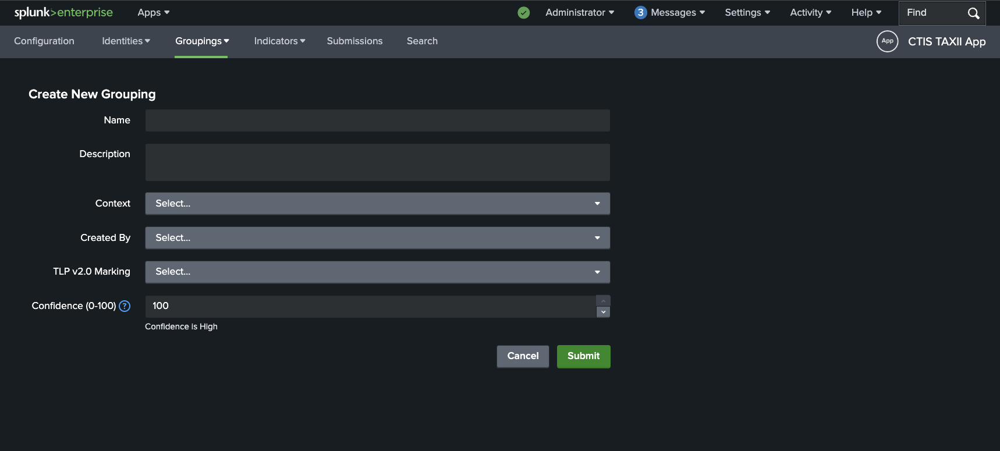
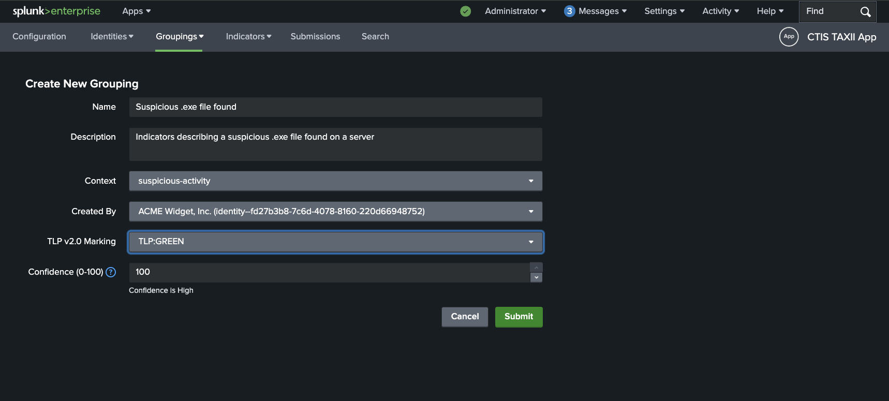
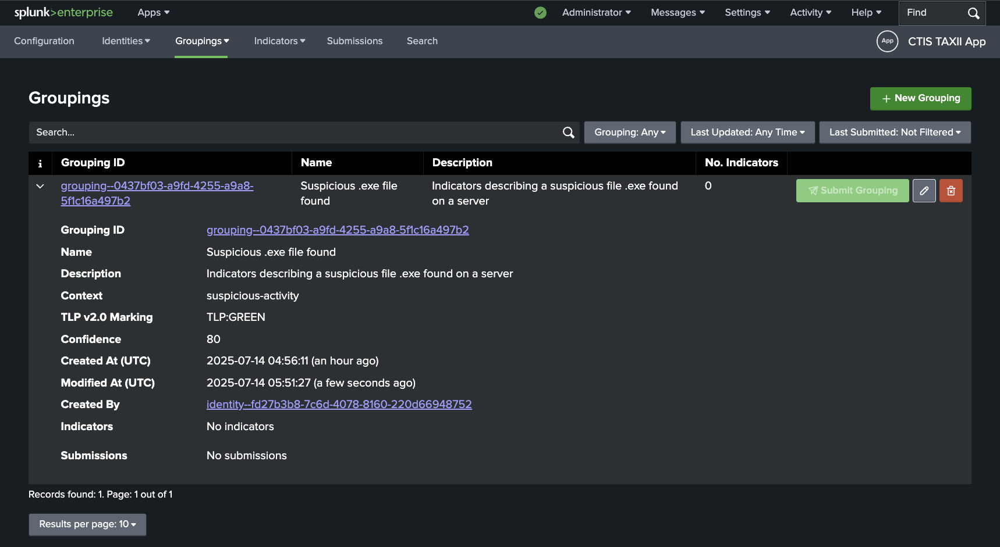
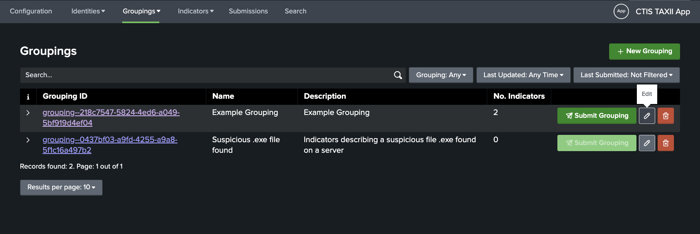
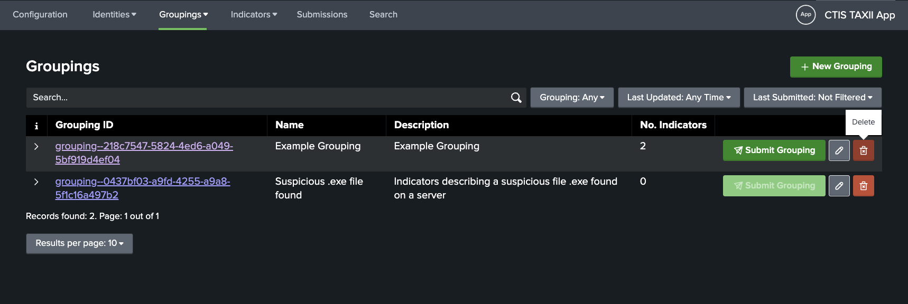

Groupings¶
Creating Groupings¶
Reference: STIX Grouping SDO
To create a new Grouping, click on the Groupings tab in the app, then click on the New Grouping button in the navigation dropdown.
This will take you to the Create New Grouping page where you can fill in the details for the new Grouping. 
Fill in the required fields. The Created By dropdown will be populated with the identities that have been created in the app.
For the TLP v2.0 Marking, set an initial marking. Note that once you add indicators to the grouping, this marking will be automatically updated based on the highest TLP marking of indicators associated with the grouping.
As an example, a Grouping might look like this: 
Viewing / Searching Groupings¶
The viewing and searching of Groupings is similar to that of Identities.
The search bar lets you search for Groupings by name, description, Grouping ID and context fields.
There are also dropdown filters available for Grouping ID, Last Updated and Last Submitted. 
Editing Groupings¶
To edit an existing Grouping, click on the pencil icon of the Grouping you wish to edit in the Groupings list view. 
Deleting Groupings¶
To delete a Grouping, click on the trash can icon of the Grouping you wish to delete in the Groupings list view.
You will be prompted to confirm the deletion. 